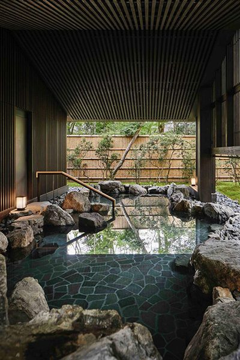

Betong & Ljus
Arkitekter som Tadao Ando förvandlar rå betong till ett levande material genom precist riktat dagsljus.
Där traditionellt hantverk möter brutalistisk betong, naturligt ljus och minimalistisk harmoni.
Utforska ikoniska verkModern japansk arkitektur utmärker sig genom sin förmåga att sudda ut gränsen mellan inne och ute. Genom begreppet Ma – det medvetna tomrummet – skapas byggnader där skuggor, årstider och material får tala.

Arkitekter som Tadao Ando förvandlar rå betong till ett levande material genom precist riktat dagsljus.

Kengo Kuma återupplivar uråldriga japanska träfogningstekniker i samtida kulturbyggnader.

Studion SANAA skapar viktlösa strukturer i glas och stål som smälter in i landskapet.